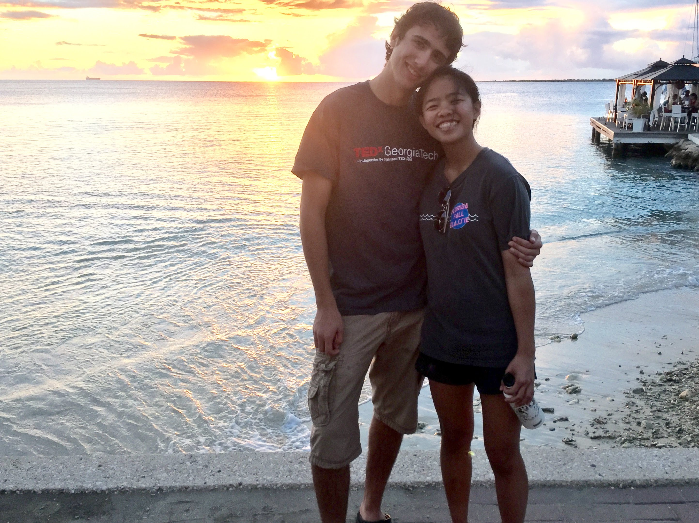
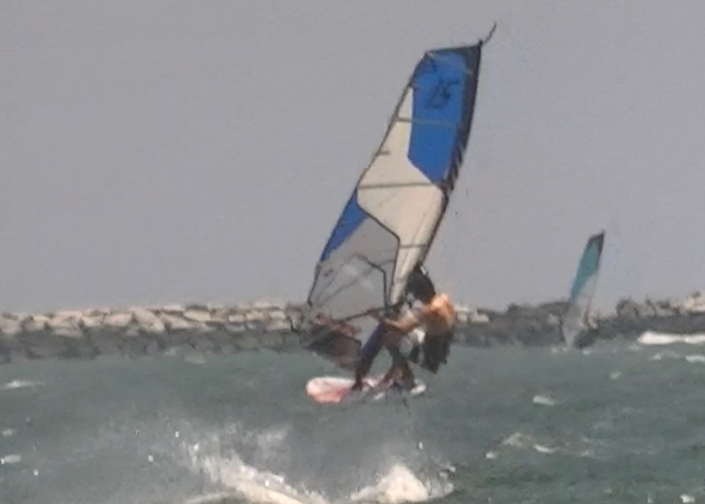
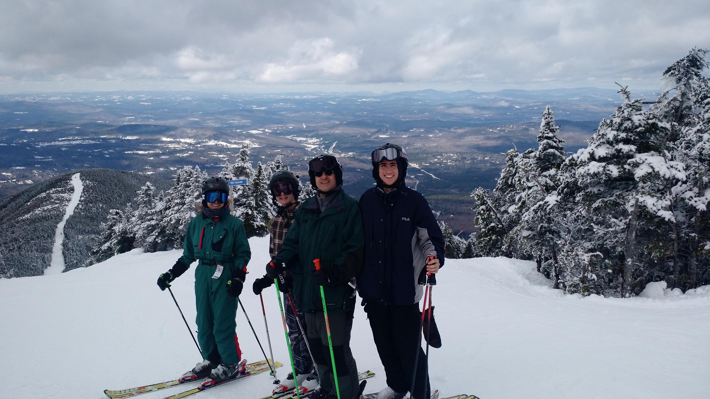
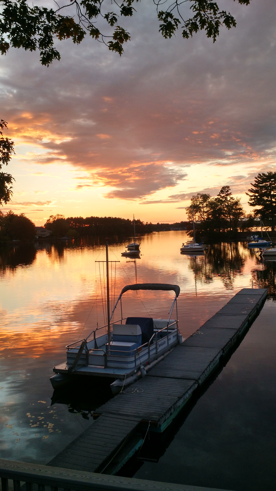

I'm a Mechanical Engineering and Robotics Engineering double major at WPI, which means I don't really like to sleep. I'm highly self-motivated, and am constantly finding new and interesting projects to involve myself in, which can be seen on the projects page of this website. Outside of school, I'm constantly taking things apart and fiddling with them to try to find ways to improve them. For example, I like playing with remote controlled cars and boats, like my Traxxas Summit, for which I'm working on building a snowblower attachment.
In school, I focus on finding extracurricular projects like WPI's Society of Automotive Engineers (SAE) to get involved in, so that I can keep pursuing my interests on campus. Last year, I lead the bodywork team, along with helping on various other aspects of the car, and we accomplished a 36th place finish among the 120 international teams at the Formula SAE Michigan event (check out the FSAE page for more) I also love WPI's project based learning curriculum, which pushes students to be involved in multiple projects every term, even in classes that may seem less focused on projects, like an introduction to stress analysis.
When I'm not in school, I love windsurfing, skiing, sailing and spending time with my friends and family. My family loves to windsurf off of the beaches on Cape Cod in Massachusetts, where we also like to sail our Hobie 16' catamaran. I participate in an annual friendly windsurfing competition on Cape Cod, organized by the community of windsurfers there, called the East coast wind fest, where I get to show off any new freestyle tricks that I've learned during the summer, and demonstrate my ability to fall in the water repeatedly and still come up smiling. (more on ECWF here) In the winter, I enjoy going skiing with my friends to mountains in New Hampshire, like Cannon mt. where I have been skiing (and falling) since the age of three. When there's no wind, or it's too cold to ski (yes that's possible), and especially when I really should be making dinner, I love to read, and devour any new books that come my way with little regard for genre. I love reading well-written books, from obscure authors like Rafael Sabatini, to more popular books like J.K Rowling's Harry Potter series (and her other less well known works like A Casual Vacancy).

